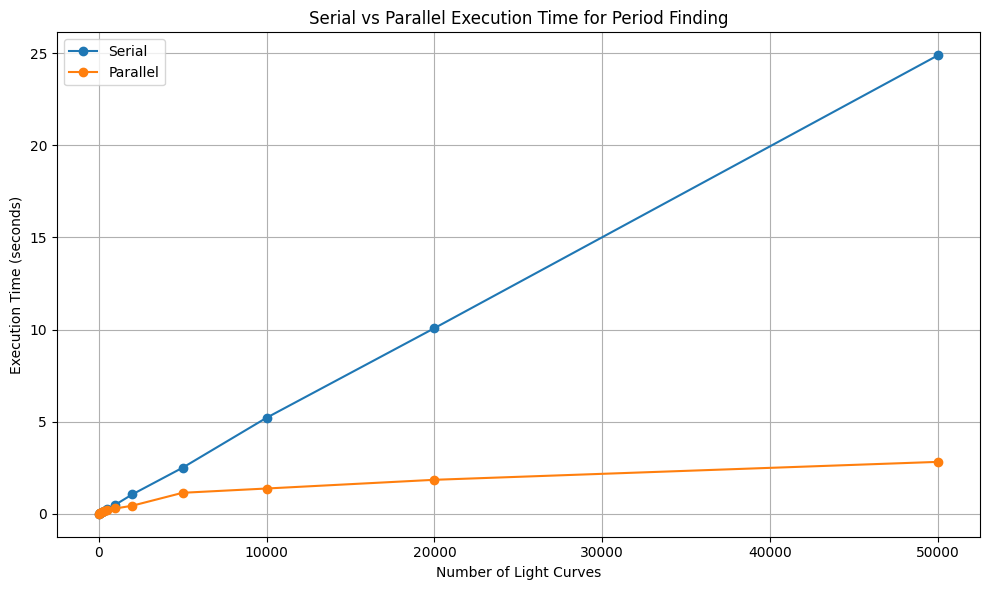

Intro code examples
Overview
Teaching: 15 min
Exercises: 0 minQuestions
What are our options to speed up our code?
Objectives
Understand the main strategies of optimizing code.
Motivation for HPC Coding
Modern computers are fast, however, the volumes of our data and the complexity of our algorithms can easily eat all computational resources and demand more. While most users begin with simple serial code, which runs sequentially on one processor (or rather on a single core), at some point it stops being enough. Maybe we want to model the entire Milky Way using the next big data release from our favorite astronomical survey, or execute high-resolution hydrodinamical simulation, or perform time-critical analysis for follow-up observations, and what took minutes or hours now would take months or years.
So what can we do? There are two main approaches:
-
Make the code faster.
– Use a better algorithm (which is always the preferred way, which, however, may take lots of time and expertise to implement).
– Restructure your code so the CPU works more efficiently, by using vectorization (doing many operations at once inside a single CPU core in a SIMD manner, utilizing internal CPU architecture optimized for this mode of operation) or parallelization (splitting work across multiple cores or machines).
-
Get more computational power.
– Upgrade to a faster processor (with a higher clock speed).
– Use hardware with more processors to implement highly parallelized code. It can be a supercomputer with multiple CPU cores, or a computer with GPUs with thousands of smaller cores.

Serial vs. Vectorized Code
Let’s look at a simple example: summing the elements of a large array. An obvious way to implement this is by using a for loop. With this
implementation, each iteration runs only after the previous one has finished.
import numpy as np
import time
array = np.random.rand(10**7)
start = time.time()
total = 0.0
for value in array:
total += value
end = time.time()
print(f"Sum: {total}, Time taken: {end - start:.4f} seconds")
Sum: 4999849.298696889, Time taken: 1.2308 seconds
Depending on your processor, this code may take up to a couple of seconds to execute.
Summation is one of those operations that can be vectorized. Instead of looping in Python, we can hand the whole array to a function that knows how to perform the sum in optimized C code.
In Python, the numpy.sum function does exactly that, using highly optimized vectorization libraries under the hood. Many other NumPy functions also use vectorization—examples include mean, max, dot, and array-wide arithmetic operations.
total = np.sum(array)
end = time.time()
print(f"Sum: {total}, Time taken: {end - start:.4f} seconds")
Sum: 4999849.29869658, Time taken: 0.0048 seconds
Run this and compare the times. You should see a big difference — vectorization lets you do the same work in far fewer CPU instructions, without paying Python’s loop-by-loop penalty. For such a small task, the loop overhead is actually a big deal.
Reference:
Key Points
Serial code is limited to a single thread of execution, while parallel code uses multiple cores or nodes.